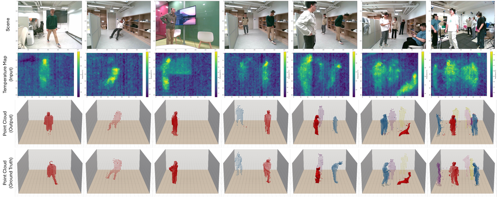
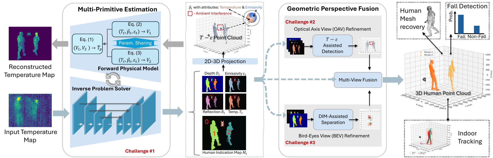
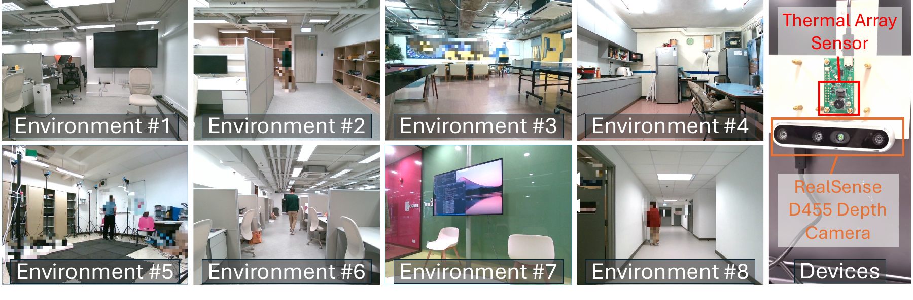
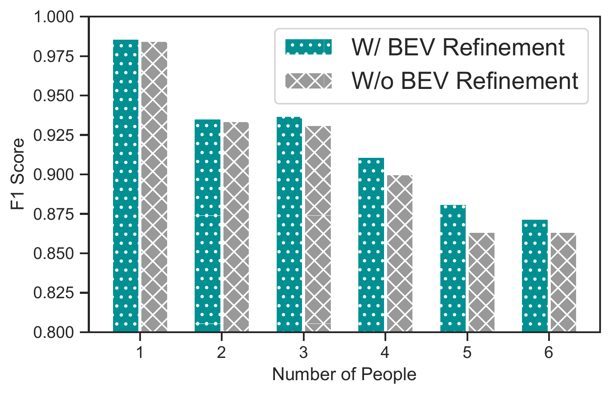
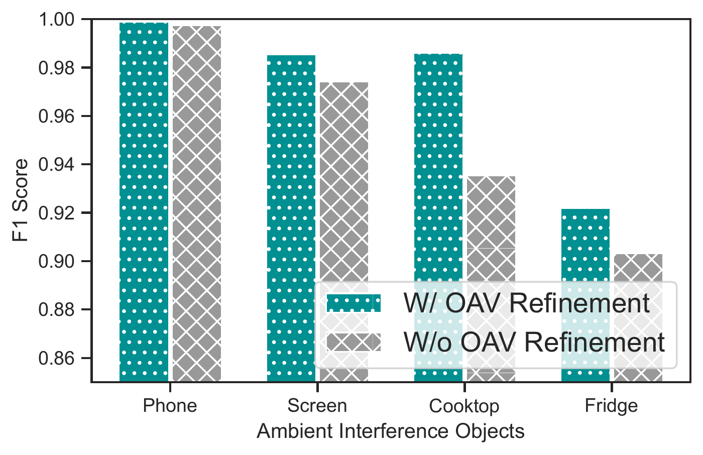
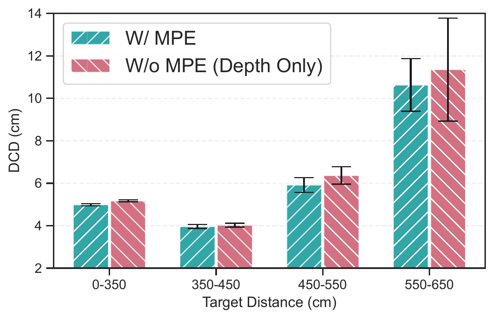
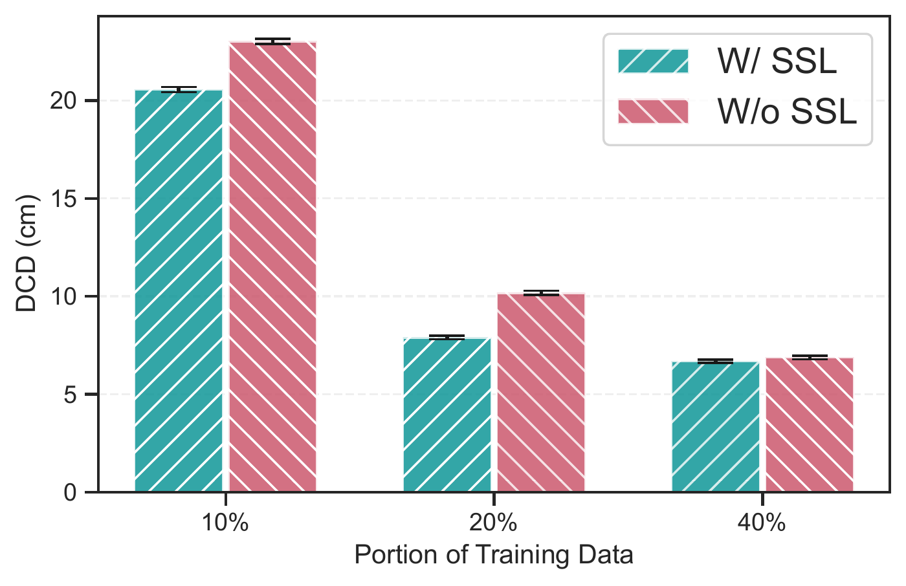
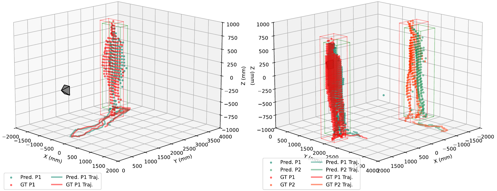
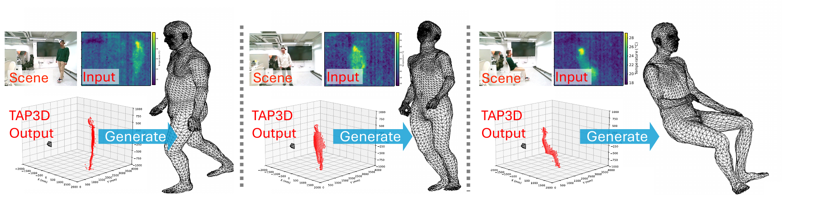
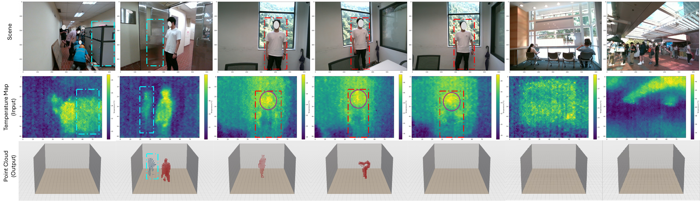

Recover thermal primitives
Jointly estimate depth, emissivity, temperature, and reflection. The forward thermal model provides physics-based self-supervision.
The University of Hong Kong
* Corresponding author
From body heat to 3D human geometry.
A single low-cost thermal array. Fully passive sensing. No RGB input.

Recovering 3D structure from low-resolution heat signatures with physics-informed learning.
Human body point clouds are a versatile representation for AI-enabled human sensing. However, existing methods using LiDAR, radar, and depth cameras suffer from inherent drawbacks in high cost, sparse reconstruction, and privacy concerns, etc. In this paper, we exploit low-cost thermal arrays and present TAP3D, the first system to reconstruct 3D human point clouds from body heat signatures, offering significant advantages in cost, density, human sensitivity, and privacy. To overcome major challenges in depth estimation, thermal interference, and multi-person separation, we propose a novel physics-informed design, which integrates a forward thermal physics model with two distinct modules: multi-primitive estimation for self-supervised joint recovery of depth and other thermal properties, and geometric perspective fusion for suppressing interference and disentangling multiple people. We implement TAP3D using a single commodity thermal array sensor and build a large-scale dataset (160K samples, 8 environments, 11 users) for evaluation. TAP3D achieves remarkable accuracy for dense point cloud generation, enabling downstream tasks like fall detection (91.46%), indoor tracking (21.86 cm MAE), and human mesh recovery (4.87 cm error). By transforming body heat into point clouds for the first time, TAP3D pioneers a new paradigm for privacy-first, fully passive human sensing for many applications.
Explore the system in the project demonstration.
Video not loading? Watch on YouTube ↗
A forward thermal physics model connects body heat to geometry. Two complementary modules recover depth, suppress interference, and separate people.

Jointly estimate depth, emissivity, temperature, and reflection. The forward thermal model provides physics-based self-supervision.
Optical-axis-view refinement suppresses thermal interference. Bird’s-eye-view refinement disentangles multiple people through differentiable index mapping.
Fuse the refined predictions into per-person point clouds for downstream human sensing tasks.
Evaluated on more than 160,000 thermal samples, across eight indoor environments and 11 participants.
| Method | DCD (cm) ↓ | F1 score ↑ | Parameters (M) ↓ | FLOPs (G) ↓ |
|---|---|---|---|---|
| RGB2Point | 10.15 ± 0.77 | 0.945 | 176.07 | 16.96 |
| NeWCRF | 19.26 ± 1.50 | 0.677 | 88.46 | 78.14 |
| TAP3D Ours | 4.60 ± 0.25 | 0.953 | 23.32 | 7.41 |
Results reported in the paper. F1 measures user detection at an IoU threshold of 0.5.
The prototype uses an 80 × 62 Meridian MI0802M6S thermal array. A co-located Intel RealSense D455 provides ground truth during data collection. Thermal and depth frames are recorded at 8 Hz and spatially aligned.

Controlled ablations evaluate perspective refinement, multi-primitive estimation, and self-supervised pretraining. Hover to enlarge; click or tap for a detailed view.

Effect of BEV refinement under varying numbers of users. Removing it has a larger impact in crowded scenes with four to six people.

OAV refinement improves detection under thermal interference: F1 rises from 0.935 to 0.986 for cooking appliances and from 0.903 to 0.922 for refrigerators.

Compared with estimating depth alone without the forward physical model, multi-primitive estimation reduces DCD by 5.59% overall.

Physics-guided self-supervised pretraining reduces DCD by 11.93% on average across label budgets. Labeled fine-tuning is still required for human detection.
A shared 3D representation supports activity understanding, indoor tracking, and human mesh recovery.

21.86 cm mean tracking error across 144 one-minute recordings.

4.87 cm minimum matching distance for recovered human meshes.
91.46%Fall detection accuracy
TAP3D is most reliable indoors with moderate thermal interference. The following examples show where overlapping people, reflected heat, and strong ambient radiation challenge reconstruction.

Severe overlap can leave people connected even after bird’s-eye-view refinement. Nearby heat sources can further obscure individuals and cause missed detections.
Metal surfaces can reflect body heat and produce false positives. Sun-heated windows can overwhelm body signatures, causing reconstruction to degrade or fail across frames.
Sun-heated surroundings can dominate the temperature map, leaving insufficient human–background contrast for reliable detection.
These are proposed directions, rather than capabilities demonstrated by the current system.
@inproceedings{zhang2026tap3d,
author = {Xie Zhang and Chengxiao Li and Xuan Liu and Chenshu Wu},
title = {{TAP3D}: Thermal-Assisted 3D Human Point Clouds},
booktitle = {The 32nd Annual International Conference on Mobile Computing and Networking},
year = {2026},
doi = {10.1145/3795866.3844491}
}